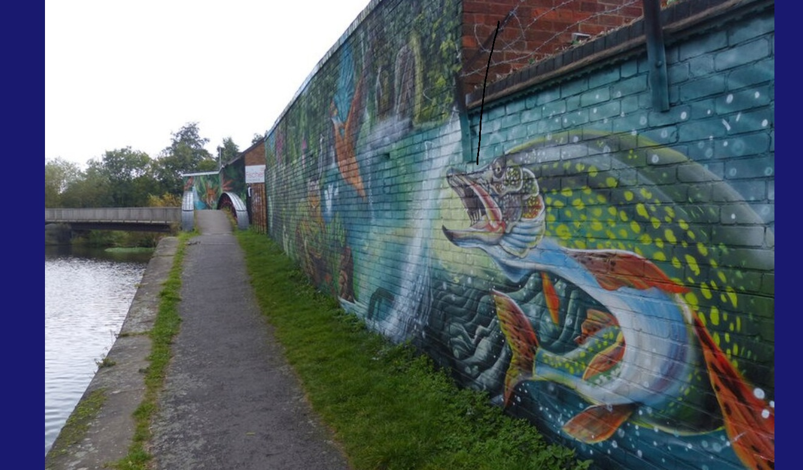
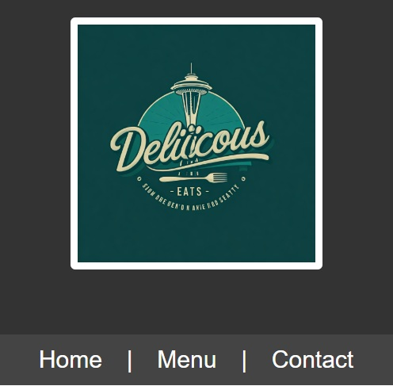
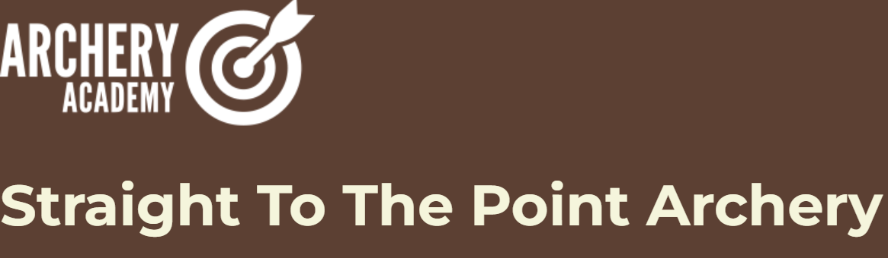

Portfolio
Here are a selection of projects that demonstrate my front-end development skills. They include coursework, personal projects, and professional portfolio work showcasing responsive design, accessibility, and modern web development practices.
Course Project 1

alt="Photo of a giant fish mural">A single-page website created as part of the University of Washington Front-End Web Development Certificate. This project explores the importance of art during difficult times while demonstrating semantic HTML, CSS styling, and responsive design principles
Technologies Used
- HTML
- CSS
- Git
- GitHub
Course Project: Fictional Restaurant Page Update

Redesigned and improved an existing restaurant website by enhancing navigation, accessibility, and visual presentation. Updated the layout and user experience to create a more intuitive, engaging, and responsive site while applying modern front-end development practices.
Technologies Used
- HTML
- CSS
- Git
- GitHub
Straight to the Point Archery

Developed a responsive website for a fictional archery business as part of a front-end development project. Translated client requirements into a clean, accessible, and user-friendly design while focusing on layout, navigation, and responsive web practices.
Technologies Used
- HTML
- CSS
- Git
- GitHub